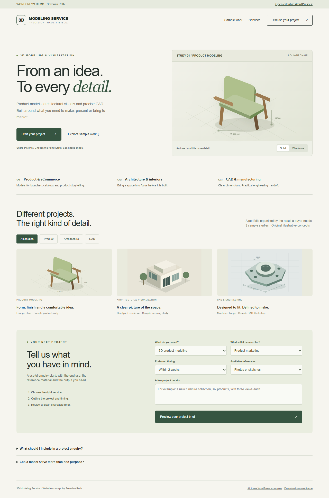
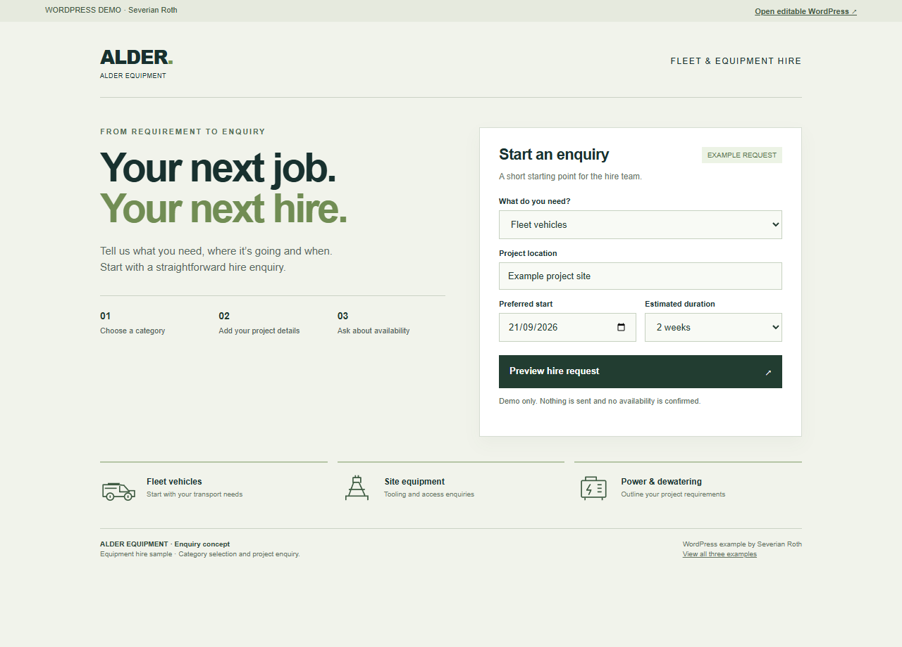
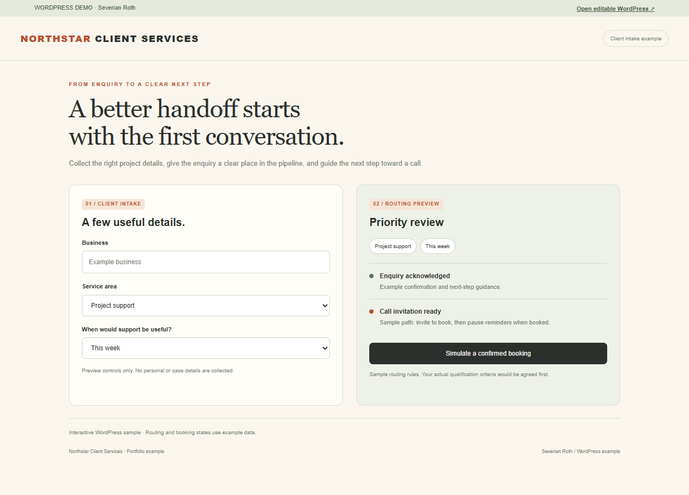
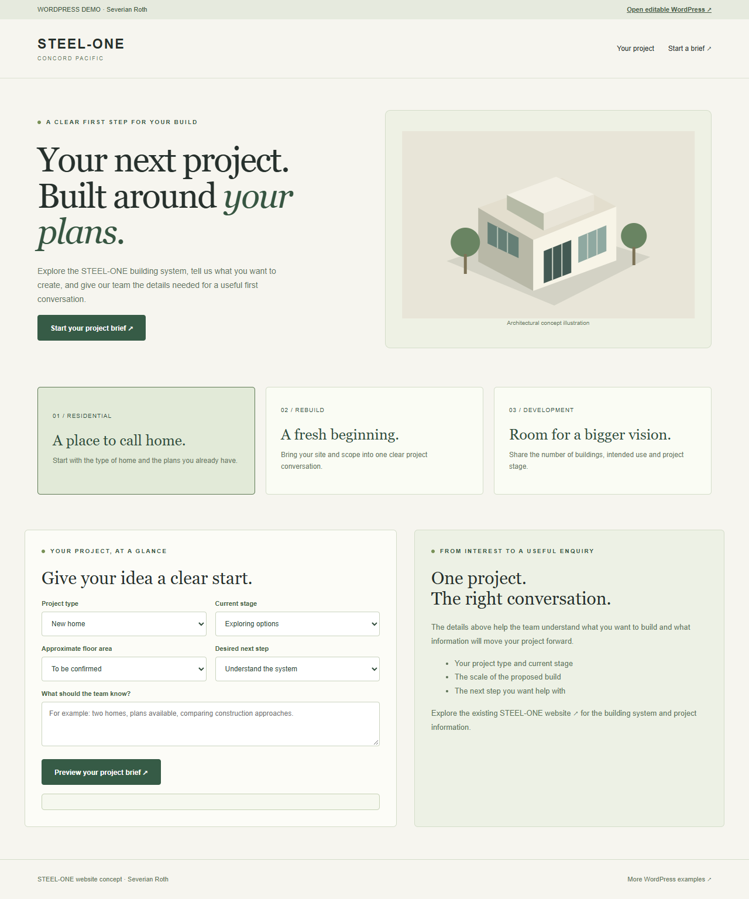

3D Modeling Service
A visual service site with a filterable portfolio and a structured project brief.
Explore the example ↗Working portfolio demos for service businesses. Explore a fast preview, then open the editable WordPress version from its top bar.

A visual service site with a filterable portfolio and a structured project brief.
Explore the example ↗
Equipment categories and a focused hire enquiry with a project summary.
Explore the example ↗
An intake experience with clear routing and a booking-state preview.
Explore the example ↗
A construction homepage concept with project selection and a useful enquiry brief.
Explore the example ↗Nonprofit concepts: Welter foundation homepage · Open Table volunteer site
Original real-estate homepage design: Triple Double — responsive views and layered design files.
Staffing homepage concept: TeamsOffshore — working enquiry flow, responsive views and design handoff.